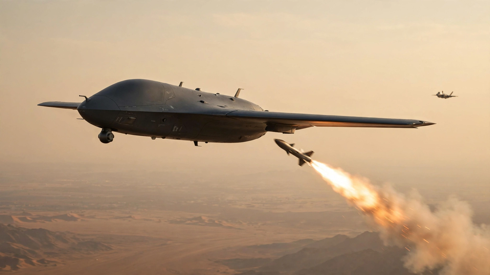

Anduril's Drone Just Fired Its First Missile. For One-Quarter the Cost of an F-35, It Changes the Math of Air Combat.

Twenty-five million dollars. That is the approximate unit cost of an Anduril YFQ-44A Collaborative Combat Aircraft, the jet-powered drone that, at Edwards Air Force Base in mid-July 2026, fired an AIM-120 AMRAAM air-to-air missile against a simulated target and hit it, marking the first time a U.S. combat drone has ever employed an air-to-air weapon beyond visual range. "Usually we shoot the missiles at the drones," retired Air Force Brigadier General Houston Cantwell, former commander of an MQ-9 Reaper wing, told the Wall Street Journal. "The fact you have a drone shooting a missile, that's a whole new ballgame."
He is right, but not because a robot shot a missile. Robots have been shooting things for decades, and the novelty of a drone pulling a trigger wore off somewhere around the second Hellfire strike in 2002. What happened at Edwards matters because of three numbers stacked on top of each other: $25 million for the drone that fired, $80 million for the F-35A that would otherwise carry the same missile into the same engagement, and roughly $1 billion earmarked in the FY2027 defense budget to begin buying these drones in production quantities that the Air Force calls "meaningful." Not a concept, not an experiment, but a purchase order.
Two Drones, One Mission
The Collaborative Combat Aircraft program, or CCA, selected two companies in June 2026 to build the first increment of semi-autonomous jet drones designed to fly alongside manned fighters. Think wingmen, but expendable. Anduril's YFQ-44A carries weapons externally on its wings. General Atomics Aeronautical Systems' YFQ-42A carries missiles in an internal weapons bay, architecturally similar to the F-22 and F-35 stealth fighters, and plans to conduct its own live-fire missile test later this year. Both are designed to operate beyond visual range under the tactical direction of a human pilot in a nearby F-35 or the forthcoming F-47, executing sensor sweeps, electronic warfare missions, and now, verified by fire, air-to-air combat against aerial targets that shoot back or at least try to.
"This was more than a simple weapons release test," Anduril Vice President Mark Shushnar said. "It demonstrated an end-to-end, beyond-line-of-sight strike against a simulated target." A human decided to fire. The drone executed the kill chain autonomously from that point forward: flew to the engagement zone, acquired the target, launched the AIM-120, and guided it to impact. No remote pilot flying the aircraft through a satellite link, the paradigm that defined Predator and Reaper operations for twenty years. Onboard autonomy, onboard execution.
Australia got there first by a few months. Boeing's Ghost Bat drone fired an AIM-120 that destroyed a "fighter-class target drone" in a test for the Royal Australian Air Force in 2025. But the U.S. Air Force's test is the one that sets procurement in motion, because behind it sits the budget line that turns prototypes into fleets.
The One-Third Rule, Beaten
Former Air Force Secretary Frank Kendall set the CCA's economic target early: each drone should cost roughly one-third the price of an F-35, which in recent production lots comes to about $80 million per copy for the Air Force's F-35A variant. One-third of $80 million is roughly $27 million. In March 2026, Colonel Timothy Helfrich, the portfolio acquisition executive for fighters and advanced aircraft, told a Defense One panel that the program had beaten that target. "Not only have we met it, we are doing much better than that," Helfrich said, declining to give an exact figure because the specific unit cost remains procurement-sensitive.
Open-source estimates from the Center for Strategic and International Studies and congressional reporting place Increment 1 CCAs between $20 million and $30 million, with the original LCAAT predecessor program targeting a wildly ambitious $3 million per unit that nobody in the Pentagon still pretends is realistic. For this analysis, $25 million serves as a working midpoint consistent with available evidence, understanding that the Air Force claims the real number is lower.
The F-47, by contrast, the sixth-generation manned fighter the CCA is designed to accompany, will cost approximately $300 million per aircraft, with $5 billion allocated in FY2027 alone for development. A baseline fleet of 185 F-47s would cost $55.5 billion before sustainment. Twelve CCAs cost roughly what one F-47 costs. Let that ratio sit for a moment, because it restructures everything about how air forces think about mass, survivability, and the political tolerance for losses in a democracy that watches its wars on television.
The Force Multiplier Model
Nobody in the open literature has published a direct cost-per-missile-station comparison between a pure F-35 force and a CCA-augmented force, so here is one built from publicly available procurement data, and the results are not subtle.
Assume a fixed air combat procurement budget of $3 billion, a realistic figure for a single major acquisition tranche. Assume an F-35A costs $80 million, a CCA costs $25 million, the F-35A carries four AIM-120 AMRAAMs internally, and a CCA carries two AIM-120s on external pylons, a conservative estimate given the YFQ-44A's wing stations.
| Metric | Pure F-35 Force | CCA-Augmented (1:2 Ratio) | Difference |
|---|---|---|---|
| Budget | $3.0B | $3.0B | — |
| F-35s purchased | 37 | 23 | −38% |
| CCAs purchased | 0 | 46 | — |
| Total platforms | 37 | 69 | +87% |
| Total missile stations | 148 | 184 | +24% |
| Pilots at risk | 37 | 23 | −38% |
The 1:2 ratio, one manned fighter controlling two drone wingmen, is the operational concept most frequently described in Air Force and CSIS analysis. Twenty-three F-35s at $80 million each cost $1.84 billion. Forty-six CCAs at $25 million each cost $1.15 billion. Total: $2.99 billion. Redistributed, that budget produces 87% more airframes in the sky and, because each platform carries missiles, 24% more initial weapon stations. Thirty-eight percent fewer pilots sit in cockpits where SAMs can reach them. Every number in this table holds if CCA unit cost is anywhere between $20 million and $30 million; the advantage narrows at the high end but never disappears.
The Attrition Arithmetic
Force structure tables look clean on procurement day. War is different. The math that matters most is not what you buy but what you can afford to lose, and this is where the CCA concept shifts from an interesting acquisition efficiency story into something that changes how generals plan campaigns and how politicians authorize them.
In a contested air environment against a near-peer adversary, think the western Pacific against layered S-400 surface-to-air missile systems and PL-15 air-to-air missiles, historical modeling and wargaming consistently produce sortie-level attrition rates between 2% and 5% for manned platforms in the opening days of a conflict, numbers the Air Force does not publish but that defense analysts at CSBA, RAND, and CSIS have explored extensively in open frameworks. Use a moderate 3% attrition rate across a 30-day high-intensity air campaign producing roughly 1,000 combat sorties from the force.
A pure F-35 force loses approximately 30 platforms over that period. At $80 million each, that is $2.4 billion in hardware destroyed, and 30 pilots killed, captured, or requiring combat search and rescue, which in a Pacific scenario means open-ocean pickup operations over hostile waters that are themselves high-risk missions consuming additional aircraft, fuel, and aircrew. Training a fighter pilot from ab initio through F-35 qualification costs more than $11 million. Losing one costs more than money.
CCAs change the exchange ratio two ways, and both favor the side with more expendable platforms. First, they absorb threat exposure by design, flying ahead of manned fighters into defended airspace, drawing fire, probing defenses, and identifying SAM radars for suppression. A surface-to-air missile that destroys a $25 million CCA instead of an $80 million F-35 saves $55 million in hardware and preserves a pilot's life. Second, the force simply has more things to lose. Sixty-nine platforms sustaining 3% attrition per 1,000 sorties lose fewer irreplaceable assets because the replaceable assets absorb a disproportionate share. If CCAs absorb losses at roughly three times the rate of the manned fighters they protect, the model suggests 54% fewer pilot losses for equivalent sortie generation.
An S-400 missile costs the adversary roughly $3 million to $5 million depending on variant. Expending one to destroy a $25 million drone still favors the CCA operator on the exchange ratio, but critically, it forces the adversary to spend finite interceptors on targets that don't have pilots in them, depleting their magazine depth faster against a numerically larger force. Wars end when one side runs out of missiles. More platforms, fewer irreplaceable humans, equivalent firepower. Not incremental. Structural.
The Missile Economy
The AIM-120 AMRAAM itself costs approximately $1.37 million per unit at current U.S. Department of Defense procurement rates, based on a recent $1.14 billion contract for 831 missiles. Export prices are substantially higher; South Korea's June 2026 FMS notification valued 70 AIM-120C-8s at $292 million, or $4.17 million each including support equipment. Poland's 400 AIM-120D-3 missiles were priced at $3.33 million each. RTX (formerly Raytheon) has ramped production from roughly 450 missiles per year to 1,200 per year, with plans to reach 1,900 per year following a February 2026 agreement, and is now exploring European co-production with Belgium as a leading candidate for AMRAAM component manufacturing.
The missile costs the same whether an F-35 fires it or a CCA fires it, so the difference is entirely the platform behind it. If you want maximum missiles in the air per dollar of procurement spending, you want the cheapest viable launcher carrying them. A CCA carrying two AIM-120s represents roughly $27.74 million in combined hardware. An F-35 carrying four represents $85.48 million. On a per-missile-station basis, the CCA costs $13.87 million per ready-to-fire missile versus $21.37 million for the F-35. A 35% reduction in cost per missile station.
What Nobody Will Tell You
This model has deliberate holes in it, and stating them honestly matters more than the headline numbers.
First, exact CCA weapons capacity has not been officially disclosed. The YFQ-44A clearly carries weapons on its wings, and the AIM-120 test confirms at least one station per wing, but whether the full combat load is two, four, or six missiles remains classified. If four, the force multiplier numbers improve dramatically; if two, the table above holds. Second, CCA sustainment costs are unknown. The per-flight-hour cost of maintaining a CCA fleet, its support equipment, its software updates, its depot-level repairs, could narrow or widen the gap compared to the F-35's notoriously expensive $35,000-per-flight-hour sustainment bill. Third, the autonomous software stack that enables CCAs to operate in contested electronic warfare environments has never been tested against a peer adversary. Ukraine demonstrates that cheap drones work against an opponent with limited EW capability, but a near-peer with sophisticated electronic warfare could degrade or disable CCA autonomous operations in ways that a trained human pilot in an F-35 cockpit could adapt around. The Air Force's wargaming reportedly shows CCAs performing well, but wargames are the product of their assumptions.
Fourth, and most fundamentally: attrition rates are illustrative, not drawn from classified wargaming. A contested Pacific air campaign might produce 1% attrition or 8% attrition depending on scenarios the public is not permitted to model accurately. The directional conclusion, that expendable platforms absorbing losses instead of irreplaceable ones saves money and lives, holds across any reasonable attrition assumption. Specific numbers are honest approximations, not predictions.
Who Else Is Watching
The Netherlands became the first foreign customer in May 2026, purchasing two CCA prototypes for integration testing with its F-35 fleet, signaling NATO interest in the loyal wingman concept beyond the United States. Nine companies are competing for CCA Increment 2, which will explore more diverse mission profiles, potentially at different cost points. Some Increment 2 concepts are "less expensive than the first increment," Colonel Helfrich told the Defense One panel. Some are "more exquisite." The Air Force's production decision for Increment 1, including final fleet size, is expected by fall 2026.
General Dale White, the Air Force's director of critical major weapon systems, told reporters that the service is actively considering scaling Increment 1 production beyond original plans, driven by wargaming results that showed large numbers of lower-end CCAs outperforming fewer exquisite platforms in Pacific combat scenarios. "We're finding a greater operational use of these platforms and capabilities," White said. "As we continue to explore the design space, how much they can do in lieu of a manned platform, that really changes the landscape of how we view cost."
In lieu of. Three words that would have ended a career in the fighter pilot culture of the Air Force ten years ago, when the unofficial motto of every tactical squadron was that unmanned vehicles were fine for surveillance but real combat required a human hand on the stick and a human eye on the threat. Now those three words are official talking points from a three-star general responsible for procurement decisions worth tens of billions of dollars.
The Bottom Line
A drone fired a missile, which is something that could have appeared in any newspaper in 2003. What happened at Edwards in July 2026 is different in kind: an autonomous jet, flying its own flight profile without a remote pilot tapping keys in a trailer outside Las Vegas, employed an air-to-air weapon at beyond visual range against a simulated aerial target and destroyed it. No human flew the aircraft. No satellite link carried control inputs across continents with a quarter-second latency that makes real dogfighting impossible. Onboard AI, onboard execution, onboard kill. And the drone that did it costs one-quarter to one-third of the manned fighter it is designed to accompany.
For anyone involved in defense procurement, the force-structure table above is the slide that matters at your next budget review. For $3 billion, you get a fleet that is 87% larger, carries 24% more weapons, and risks 38% fewer pilots. Adjust the CCA unit cost up or down by $5 million and the advantage persists. For taxpayers, the macro implication is real: the F-35 program's lifetime cost stands at $1.12 trillion for 2,443 aircraft through 2070. If CCAs can credibly perform 30% of current F-35 mission sets at one-third the cost, the potential savings over a multi-decade fleet lifecycle run into hundreds of billions. For anyone watching the Pacific security environment, the timeline matters: approximately 30 CCAs in FY2027, 100+ by 2029, with scaling decisions this fall. China's sixth-generation J-36 prototype is already flying. It is not a question of whether the Air Force will build drone wingmen. It is whether it will build enough of them fast enough.